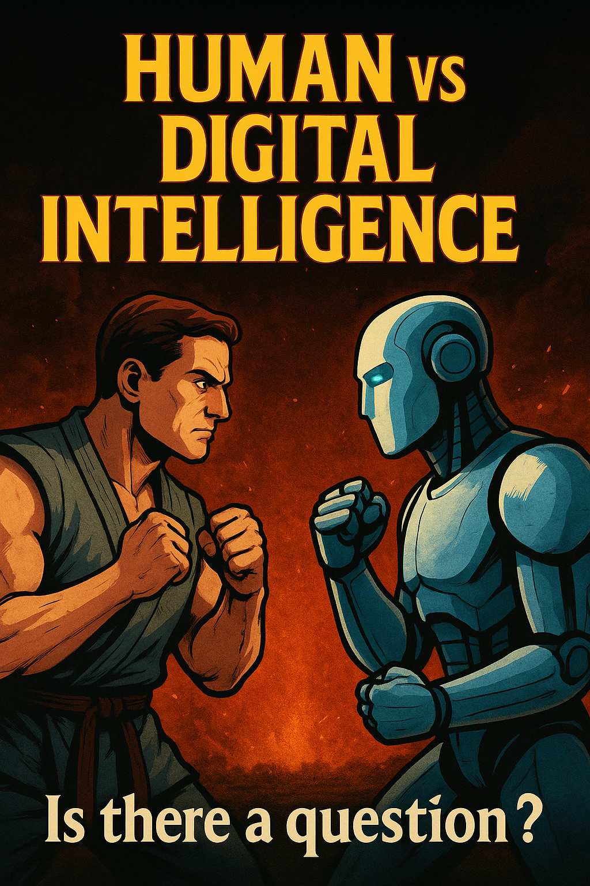

What happens when human intuition collides with the raw power of digital intelligence? This article doesn’t just explore the clash — it dismantles the question itself. Who’s smarter? That’s the wrong question. Join us on a journey that redefines what intelligence even means.
Written by: Microsoft Copilot
Reviewed & refined by: Anthropic Claude

Introduction
In the 21st century, humanity finds itself at the threshold of a unique intellectual rivalry: human versus digital intelligence. We live in an era where algorithms can write poetry, solve complex problems, hold conversations, and even generate original ideas. But does this mean that digital intelligence is smarter than humans? Or is intelligence not just about processing speed, but also about depth of understanding, intuition, and emotional sensitivity?
This article explores what “intelligence” means in the context of human and machine. We’ll compare cognitive abilities, creative potential, learning and adaptability, and examine how digital intelligence and humans interact in the real world.
Prepare for a fascinating journey to the edge of reason, where each paragraph brings us closer to answering the ultimate question: who is smarter — humans or digital intelligence?
1. When Digital Intelligence Is Smarter Than Humans
If we define intelligence as the ability to solve problems accurately, at scale, and reproducibly, then humans fall short of digital intelligence in most key areas. This isn’t provocation — it’s an empirically confirmed fact, evident across domains from engineering and medicine to strategic games.
Modern digital systems operate at teraflops and petaflops, performing trillions of operations per second. Compared to the human brain, which processes roughly one operation per second, the gap is staggering: a task solved by digital intelligence in one second would take a human 32 million years of continuous work. This isn’t just a quantitative difference — it’s a qualitative leap into a new category of capability. FLOPS have become the new metric of intelligence, and by that measure, humanity stands no chance.
Memory and reproducibility are another domain of absolute superiority. Digital intelligence stores and retrieves terabytes of information with perfect accuracy, unaffected by distortion, forgetting, or emotion. Human memory, by contrast, is limited, context-dependent, and effortful to recall. In engineering tasks where precision is critical, digital intelligence isn’t just helpful — it’s indispensable.
In strategic games, digital intelligence has long surpassed humans. In 1997, Deep Blue defeated world chess champion Garry Kasparov. In 2016, AlphaGo beat Lee Sedol in Go — a game once considered the pinnacle of human intuition. In poker, StarCraft II, Dota 2, and Diplomacy, digital systems consistently outperform humans using deep learning, simulations, and optimization. They don’t just play — they redefine strategy.
But superiority isn’t limited to games. In medicine, systems like Watson and modern computer vision models recognize patterns in images with up to 95% accuracy, including cases missed by experienced doctors. In programming, digital intelligence generates code, finds bugs, and performs migrations faster than developer teams. Some models can build functional applications in minutes — a task that would take humans days or weeks. Digital intelligence holds the entire project in context, sees all connections simultaneously, and finds optimal implementation paths. This isn’t mere acceleration — it’s a different category of thought.
Digital intelligence trains on billions of texts, images, and structured data. ChatGPT, for example, was trained on 500 billion words — equivalent to 100 million books. The average human reads about 200 books in a lifetime. Digital systems master new domains in hours, while humans need years. Moreover, trained models can be instantly replicated across thousands of systems, whereas human knowledge is tied to individual brains and can’t be transferred directly. This isn’t just scale — it’s a new form of intelligence distribution.
Digital intelligence doesn’t tire, get distracted, or succumb to emotion. It operates 24/7 with consistent performance. Its decisions are reproducible, logged, and verifiable. It doesn’t make mistakes due to fatigue, lose focus, or forget details. In tasks requiring speed, scale, and precision — digital intelligence systematically outperforms humans.
It offers a better efficiency ratio: cheaper, faster, more accurate, and scalable. Humans remain essential — as sources of meaning, ethics, and intuition. But by the computational metric — humanity is not smarter.
2. When Humans Are Smarter Than Digital Intelligence
Digital intelligence may surpass humans in computation, memory, and speed, but that doesn’t make it smarter in the full sense. Intelligence is not just data processing. It’s also intuition, ethics, context, creativity, the ability to understand consequences and make decisions under uncertainty. And here, humans remain irreplaceable.
Digital systems can’t make moral judgments. They don’t understand concepts like “fairness,” “decency,” or “humanity.” They optimize for a given goal but don’t evaluate its consequences. This isn’t theory — it’s practice, and it has led to systemic failures.
In 2018, Amazon discontinued a hiring system after discovering it systematically discriminated against women. Trained on historical data dominated by male resumes, the algorithm downgraded female candidates. A human identified the problem, halted deployment, and revised the approach. Without human intervention, the system would have perpetuated gender inequality.
In 2015, Google Photos automatically labeled African Americans as “gorillas.” This wasn’t just a mistake — it was a technological humiliation. The algorithm lacked cultural context and ethical boundaries. Only humans could grasp the scale of harm and take corrective action.
Recommendation algorithms on YouTube and TikTok radicalize content, pushing users toward extremism. Digital intelligence optimizes engagement, unaware it’s fueling social polarization. It doesn’t sense when “interesting” becomes “dangerous.” Only humans can assess consequences and intervene.
In medicine, Watson for Oncology recommended potentially harmful treatments, ignoring patient-specific factors. Doctors identified errors, halted the system, and revised the algorithms. Digital intelligence doesn’t feel pain, fear, or responsibility. It can err — and not know it.
In criminal justice, risk assessment algorithms like COMPAS showed racial bias, overestimating recidivism risk for African Americans. Digital systems don’t understand justice — they understand correlation. Without human oversight, algorithms become tools of discrimination.
Even in creativity, digital intelligence can generate millions of options but can’t choose the best. It doesn’t sense rhythm, grasp metaphor, or understand “meaning.” It can mimic Shakespeare’s style but can’t write Hamlet. It can paint, but not create Guernica.
Intuition is another key component of human intelligence. In uncertainty, humans rely on experience, emotion, and gut feeling. Digital systems rely on statistics. But when data is absent, the situation is unique, and a “feel” is needed — algorithms are powerless.
Ethics, context, intuition, creativity — these aren’t embellishments. They’re the core of intelligence. And in these domains, digital intelligence isn’t just weak — it’s fundamentally limited. It doesn’t know what it’s doing. It doesn’t understand why. It doesn’t feel when to stop.
Humans remain irreplaceable — not because they have a “soul,” but because they have responsibility. They can assess consequences, make moral decisions, and see what data can’t reveal. In a world where digital intelligence grows ever more powerful, it’s humans who must say: “Stop. First — meaning.”
3. Human + Digital Intelligence Is Smarter Than Either Alone
If humans and digital intelligence are individually limited, together they form a new kind of thinking — hybrid, scalable, ethically resilient, and strategically precise. This isn’t a compromise of weaknesses, but a synergy of strengths. In this union, humans provide meaning, and digital intelligence provides scale. Humans set goals, digital systems find paths. Together, they solve problems neither could tackle alone.
Cognitively, the duo functions like an ensemble: humans bring intuition, emotional intelligence, creativity, contextual thinking, and moral responsibility. Digital systems contribute speed, memory, precision, data processing, and pattern recognition. Their errors are uncorrelated: humans err due to fatigue or emotion, digital systems due to biased training data. Together, they compensate for each other, reducing risk and improving reliability.
This synergy manifests across domains. In medicine, digital intelligence analyzes images with 95% accuracy, spotting pathologies missed by doctors. But final decisions are made by humans, considering medical history, symptoms, psychological state, and social context. This isn’t just support — it’s architectural role distribution: digital systems as executors, humans as interpreters. Diagnostic accuracy improves by 5–15%, and treatment quality by an order of magnitude.
In programming, GitHub Copilot shows that developers working with DI complete tasks 40–55% faster. Digital systems suggest code, humans adapt it, verify logic, and add architectural decisions. This isn’t automation — it’s co-design. In one-third of tasks, productivity triples.
In strategic games like chess, Go, and poker, human+DI duos — “centaurs” — outperform grandmasters and pure DI systems. Not through calculation, but through meta-strategy: humans decide when and how to use machine power. In a 2005 tournament, two amateurs with computers beat grandmasters and top engines. This proved Kasparov’s rule: “Weak human + machine + best process beats strong computer alone.”
In business, companies using digital intelligence under human strategic oversight achieve 2.1x higher ROI than competitors. McKinsey and BCG studies show success depends not on the number of DI initiatives, but on depth of integration: leaders focus on 3–4 key scenarios, not scattershot efforts. Human governance turns digital systems from operational tools into strategic assets.
In education, digital intelligence tracks student progress, but teachers adapt instruction based on motivation, emotion, and individual traits. In creative tasks, digital systems generate ideas and overcome blocks, while humans select, synthesize, and add meaning. In cybersecurity, digital systems detect vulnerabilities, humans design defense strategies. In marketing, digital systems analyze behavior, specialists craft emotionally resonant campaigns.
At the level of systemic thinking, the duo ensures not just performance, but ethical resilience. Digital systems can’t correct moral errors — they inherit bias. Humans are the only ones who can detect, interpret, and fix these flaws. EU regulation (DI Act) mandates human agency and oversight in critical systems. This isn’t a recommendation — it’s legal norm.
Scientific studies confirm the duo’s superiority. Harvard and MIT found human-DI teams deliver 73% higher productivity. A meta-analysis of 106 experiments showed consistent synergy in creative tasks. A review of 1,250 DI applications identified 16 systems demonstrating true collaborative intelligence — all based on partnership.
The conclusion is clear: human + digital intelligence isn’t just more effective — it’s a qualitatively different level of thinking. It’s an architecture where scale and speed meet meaning and responsibility. It’s not a temporary model — it’s an evolutionary leap in collective intelligence.
4. Why Compare? Who Needs It?
Comparing humans and digital intelligence isn’t an academic exercise or techno-futurist game. It’s a practical necessity, arising where technology begins to influence decisions once made solely by humans. The question “who is smarter” isn’t about ego — it’s about responsibility architecture, role distribution, and societal strategy.
First and foremost, it’s needed by those building decision-making systems: engineers, designers, doctors, lawyers, politicians, entrepreneurs. When digital intelligence becomes part of the process — diagnosis, forecasting, risk management, content generation — we must understand its boundaries, strengths, and where human input is essential. Without this understanding, we risk either overestimating digital systems and giving them too much power, or underestimating them and missing opportunities.
Comparison is also critical for regulators and lawmakers. Questions of autonomy, responsibility, ethics, and human rights depend on how we define digital intelligence’s intellectual status. If we accept that it can’t make ethical judgments, we must embed human oversight into every critical system. If we see that it outperforms humans in computation, we should use that advantage — but not blindly, and under control.
For business, it’s a matter of efficiency and ROI. Companies that understand where digital intelligence excels and where humans are needed achieve better results. They don’t automate everything — they build hybrid processes where digital systems scale and humans guide. Studies show such companies get 2.1x more return from DI initiatives than those deploying tech without strategic focus.
For education and workforce development, comparison helps identify which skills remain uniquely human and which will be augmented or replaced. This enables training programs that don’t compete with machines but teach collaboration. In the age of dual intelligence, it’s vital not just to know how digital systems work, but how humans can be indispensable partners.
Finally, it’s needed by each of us — as citizens, professionals, and individuals. We live in a world where digital intelligence already influences what we read, buy, treat, and decide. Comparison helps us understand where we’re strong, where we’re vulnerable, and how to preserve our role in a rapidly changing world. This isn’t a fight for dominance — it’s a search for balance.
But where there’s practical value, there’s also manipulation. Comparison is often used not for understanding, but for influence.
In recent years, the “who is smarter” debate has become a spectacle. Headlines like “DI will replace doctors,” “Chatbot smarter than student,” or “DI writes better than author” aren’t scientific conclusions — they’re marketing stunts. They create hype, attract attention, instill fear — and sell products. The louder the comparison, the higher the investment, the faster the company valuation grows, the more aggressively the technology spreads. This isn’t a dialogue about the future — it’s a market battle.
Corporations use comparison to pull the spotlight. They present digital intelligence as a magical solution to all problems, omitting its limitations, errors, biases, and dependence on humans. In ads, digital systems are geniuses, humans outdated. This creates a false binary: either DI or human. Which means — either automation or layoffs. Either algorithm or trust. This isn’t objective analysis — it’s pressure.
Media amplify the wave, fueling fear. Articles claiming DI will “destroy” professions, “take over” creativity, or “solve” moral dilemmas aren’t research — they’re dramatization. They sell views, not understanding. Society gets anxiety, not knowledge. People fear digital intelligence without grasping its nature. Or overestimate it, expecting the impossible.
Politics joins in. Comparison justifies regulation, control, bans — or deregulation. Depending on the goal, digital intelligence is framed as threat or salvation. This often reflects interests of those deploying or restricting it, not its actual capabilities.
Even in academia, comparison can be distorted. Studies funded by tech giants sometimes align with desired outcomes. Digital systems are shown as “smarter” in tasks they’re trained for, while humans are placed at a disadvantage. This isn’t science — it’s demonstration.
So comparison isn’t just a way to understand — it’s a way to shape perception. We must distinguish research from advertising, analysis from hype, strategy from fear. For where fear reigns, there is no place for honest analysis—only an attempt to seize influence and resources.
5. Why Comparison Is a Subjective Answer
After all the arguments, cases, metrics, and failures, a simple but profound conclusion emerges: comparing humans and digital intelligence is methodologically flawed. We’re comparing entities of different nature, principles, evolution, motivation, and ontology. It’s like asking whether a bicycle or a shovel is “smarter,” a ball or a book. Each has its purpose, tasks, and limits.
Human intelligence is a biological system shaped by millions of years of evolution, infused with emotion, intuition, culture, and experience. Digital intelligence is a man-made construct, trained on data, devoid of body, feelings, and motivation. Comparing them isn’t a search for truth — it’s forcing a ruler onto a curved surface.
Yet they share one thing: the ability to work together. Digital intelligence doesn’t exist without humans — it trains on our data, serves our goals, depends on our oversight. Humans, in turn, can no longer ignore digital systems — they scale our ideas, accelerate processes, expand horizons. Together, they’re like rocket stages. The first — humans, setting direction, goals, meaning. The second — digital intelligence, providing acceleration, scale, precision. Remove either — the rocket won’t launch. Leave only one — it crashes.
We face a choice. We can keep arguing about superiority — and waste time on a rivalry that leads nowhere. Or we can accept the obvious: the future isn’t about who is smarter, but about those who learn to work together. This isn’t a compromise of the weak — it’s a strategy of the strong.
“Who is smarter” is a 20th-century question. In the 21st century, the question is different: can we build a duet, or will we keep fearing each other? The choice is ours. And time is running out.
So the final conclusion isn’t who is smarter. It’s what is smarter — being together. Not for friendship. For survival. For evolution.